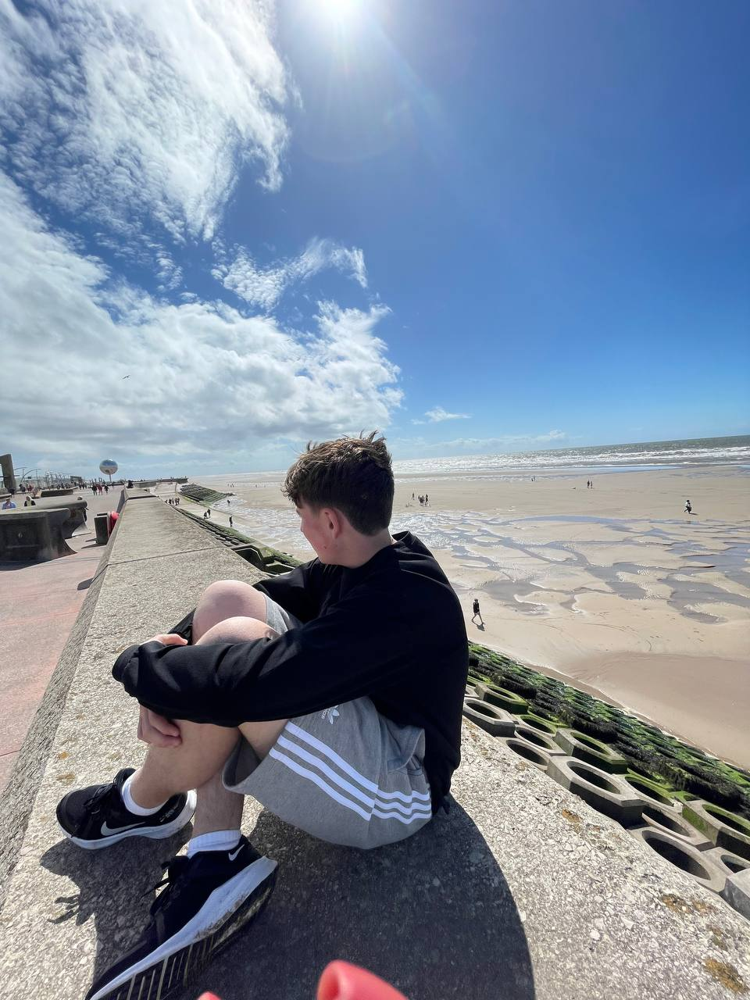

Personal Info
- Ім'я:Артем
- Вік: 14 років
- Народився в місті Дніпро, проживаю на Чернігівщині
- На данний момент живу на території Англії
- Вправно володію Англійською Мовою
- Маю британського кота (Залишив в Україні)
- Раніше Займався Роботехнікою, та писав коди в IDLE Python
- Маю досвід в малюванні, 2 роки, та сертифікат Лауреата
- Зараз намагаюсь активно понурюватись в середовище програмування
Extra Info
- Email: artemi05276@gmail.com
- Phone: +380687464055 [UKR]
- Adress: Html street 8, London, UK